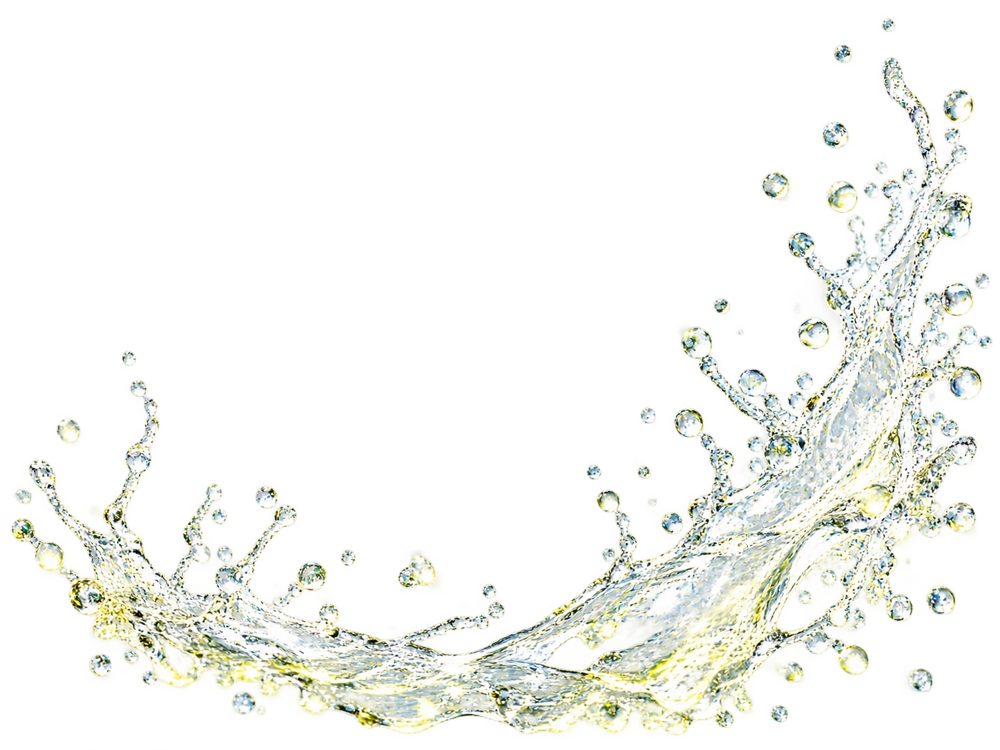
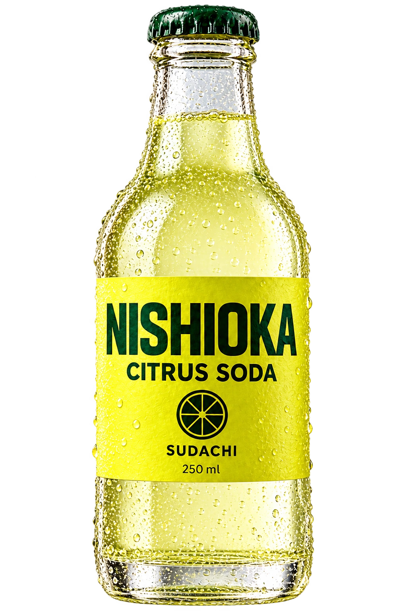

西岡ソーダ店
250 ml

すだち、はじける。
すだち
西岡ソーダ店 / 文字の修正案
果実の輪郭に、文字を沿わせました。
「すだち、はじける。」を、果実の上半分に沿う弧で組みました。瓶の傾きと水飛沫に合わせ、文字も構図の一部にしています。
今回は静止した画面で、文字の組み方を確認する案です。


自主制作の架空ブランドです。商品は販売していません。


すだち
西岡ソーダ店 / 文字の修正案
「すだち、はじける。」を、果実の上半分に沿う弧で組みました。瓶の傾きと水飛沫に合わせ、文字も構図の一部にしています。
今回は静止した画面で、文字の組み方を確認する案です。
自主制作の架空ブランドです。商品は販売していません。